the legend of heidi
hi!
welcome to my super cool guide to make a super cool game:
the legend of heidi!
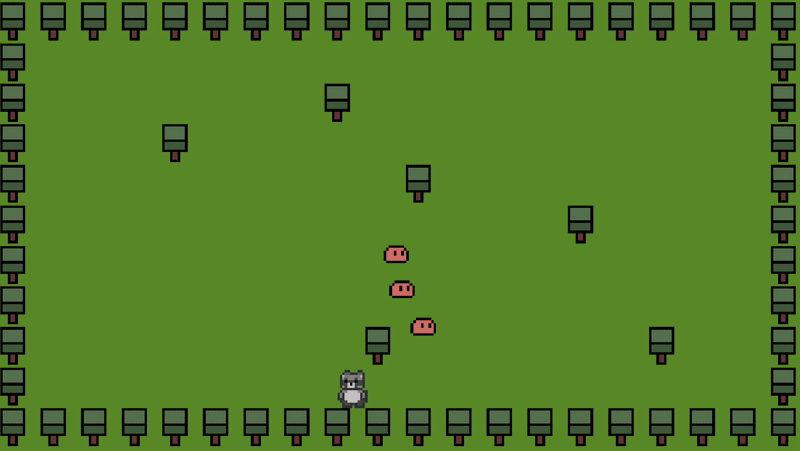
the legend of heidi
hi!
welcome to my super cool guide to make a super cool game:
the legend of heidi!

first, make sure to install gamemaker and create a blank project: https://gamemaker.io/en/download
also, download my assets here: link
sprites
sprites are the images of your game. they represent your platforms, backgrounds, and your heidi.
to make a sprite, right click on the Asset Browser and click create group and call it Sprites Then, right click on that folder and click Create -> Sprite and call it sPlayer.
(you can call it whatever you want, but i promise this naming scheme makes things super easy)
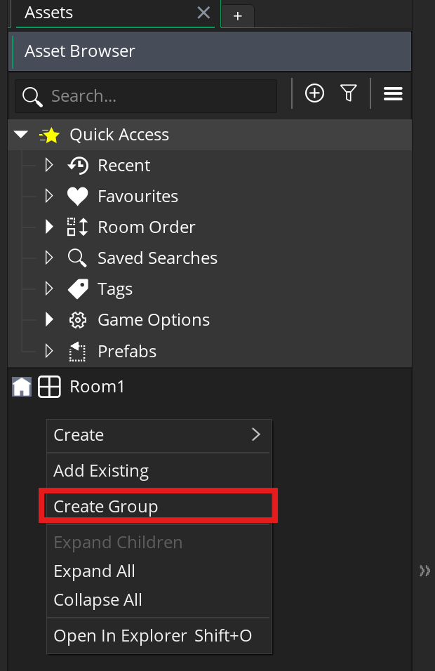
now, you can import your sprite! normally you should make your own sprite but i made one for you this time. you can just hit Import and select the player sprite from my asset pack: :link:
notice that each of these sprites are 16x16 pixels. generally, pixel art is done on a grid, where each sprite is either 16x16 pixels or 32x32 pixels. this makes everything look neat and super easy to work with.
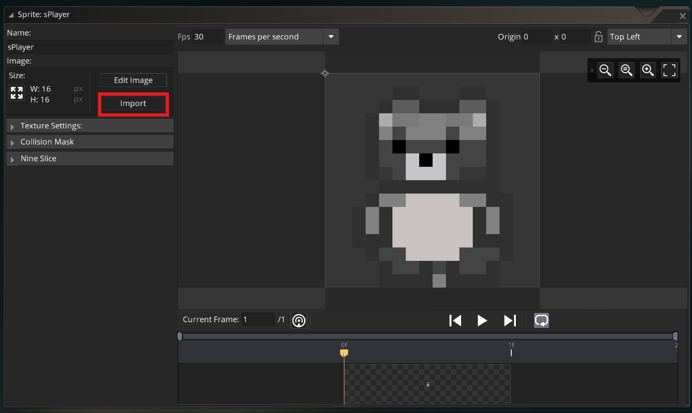
objects
lets make some objects now!
sprites are the images of your game: by themself they can’t really do much, but you can attach them to objects to make some really cool things.
create a new folder for Objects, and right click on it and select Create -> Object. call it oPlayer and assign the sPlayer sprite to it. here, you can create Events to add code your objects, but we can wait and deal with that later.
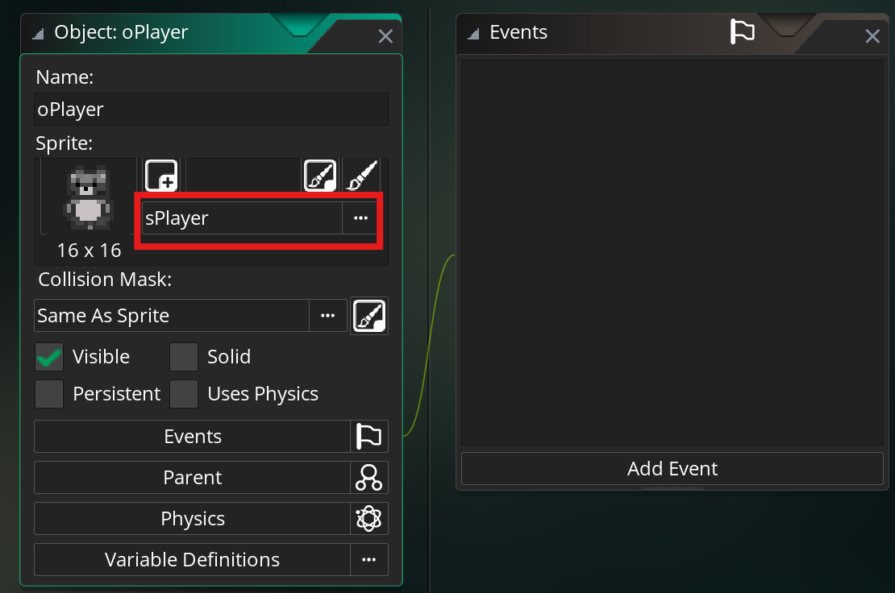
now, go back and do it again for the tree, slime! make sure to import the sprites and attach them to objects.
(double click on an object/sprite in the asset browser to open it)
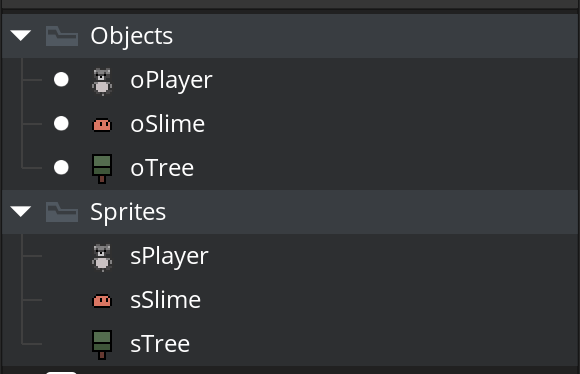
rooms
now that we’ve created so many objects, it’s time to add them to your level!
Double click Room1 to open it.
the default room size is pretty big, so lets change it 320 x 180 in the Inspector on the left. you should also change the grid size to 16x16 so the objects snap to the grid.
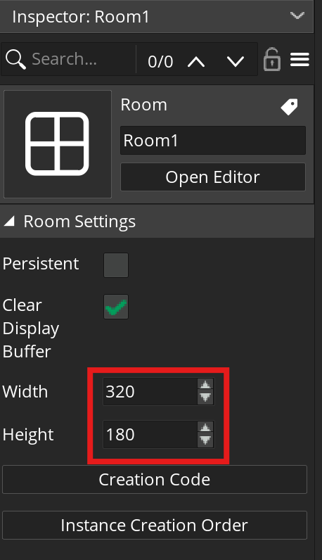
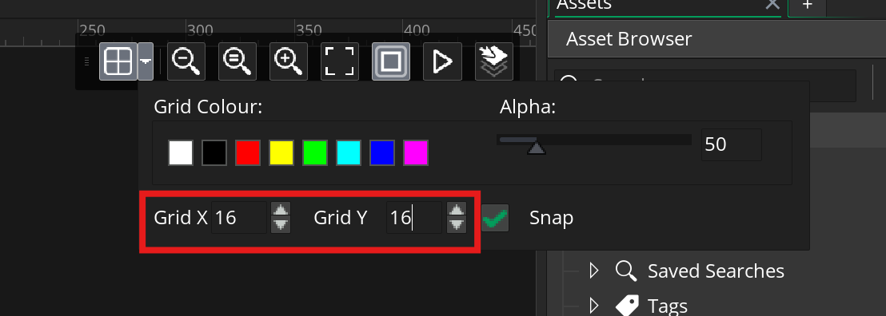
lets switch the background color to something that looks a little more like grass. in the Inspector, click on the Background layer and switch the Colour to a grassy color, or you can just pick any color you want :)
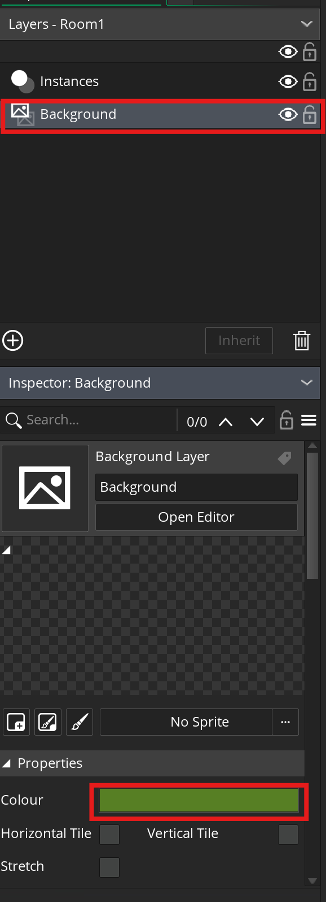
now, make a level! switch back to the Instances layer so you can add objects, and then you can drag in the objects from the asset browser into the room, or after selecting an object you can hold alt and click and drag to paint an object into the room. here’s what i made ->
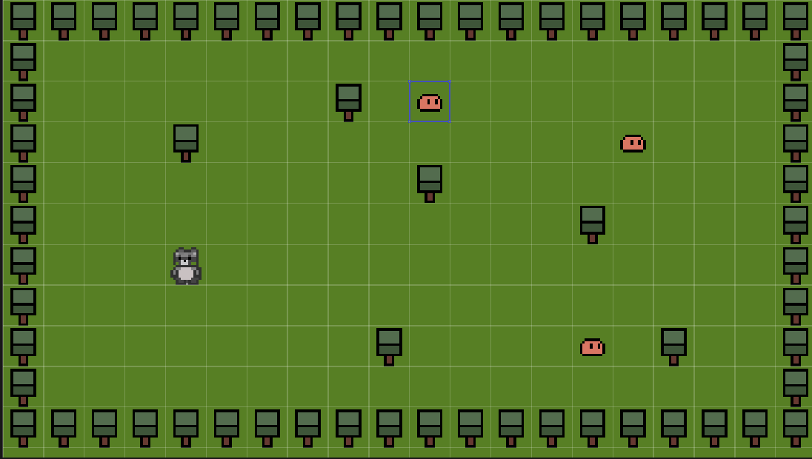
switch to an html5 build (web build) in the top right corner and hit play. you might be prompted to sign in and download the HTML5 module ->
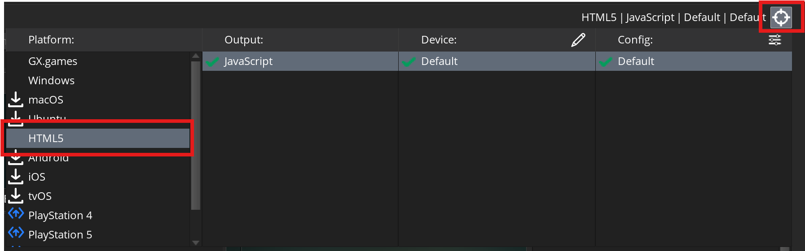
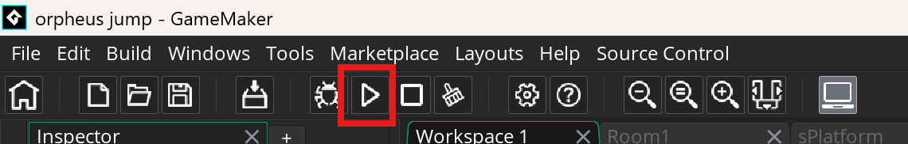
the game will open in a browser, but you'll notice that the game is really small and blurry, so lets fix that!
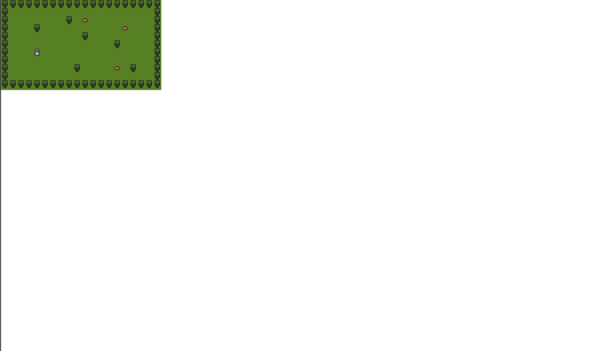
go to Settings -> HTML5 -> Graphics and uncheck Interpolate colours between pixels. this makes your art "pixel perfect", not ideal more more high-resultion art but needed for pixel art.
next, go to the room editor, and in the Inspector on the left, enable viewports, make Viewport 0 visible, and change the Camera Properties of Viewport 0 to 320x180
(not the Viewport Properties!)
now, your game should be big and clear, but it still doesn't do anything yet
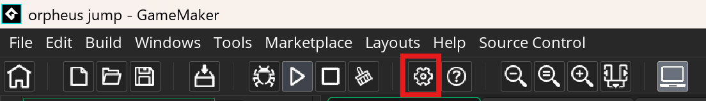
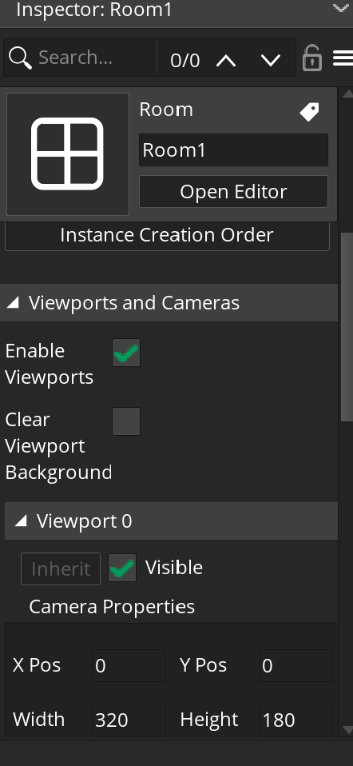
events
first open the oPlayer object (double click on it in the asset browser), click Add Event, and create a Create event and a Step event (just the normal Step event)
click GML Code if prompted
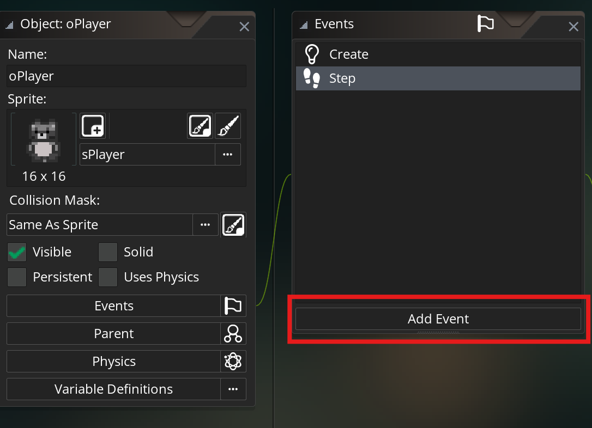
create event
next, add the following code to the Create event:
x_speed = 0
y_speed = 0
movement_speed = 1
this code creates three different variables which we will use for heidi's movement: horizontal speed, vertical speed, and the overall movement_speed
the Create event only runs when an object is created, so x and y speeds start off at 0 since heidi is initially still. the movement speed refers to the overall speed heidi can move when the player presses the arrow keys
step event
the Step event runs every step (60 times per second), so any code here will be constantly running
lets first check for keyboard input. add this code to the Step event
left = keyboard_check(ord("A"))
right = keyboard_check(ord("D"))
up = keyboard_check(ord("W"))
down = keyboard_check(ord("S"))
horizontal_input = 0 + right - left // calculates the horizontal input
vertical_input = 0 + down - up // calculates the horizontal input
this creates 4 variables that will each be 1 if the button is pressed or 0 if it isnt
we use keyboard_check to check if the a key is being pressed
next, we calculate the horizontal input, by using right - left, we make it so that horizontal_input is 1 if the player is moving right, -1 if they're moving left, or 0 if they aren't moving in the horizontal direction
we do the same for vertical movement, with 1 corresponding to downwards, -1 corresponding to upwards, and 0 corresponding to no vertical movement
gamemaker works a lot like an coordinate plane, with positive x values being towards the right and negative x values being towards the left. however, the vertical direction is flipped, with positive y values going downwards and negative y values going upwards
now, we can do our movement
x += horizontal_input * movement_speed
y += vertical_input * movement_speed
we multiply our input by the movement speed to get our total movement in each direction, and then add that to the x and y position of the player
+= means that we are adding something to a value, so in this case we are adding our movement to the original player position
remember, this happens multiple times a second so it should seem like smooth motion. click play and find out!
fixing our movement
now our heidi can move, but you might find she still feels a little weird to control
first, you can change the movement speed in the Create event. find a speed you like!
next, lets make heidi face the direction she moves. add this to your code:
if(horizontal_input < 0) { // if heidi is moving to the left
image_xscale = 1 // make the sprite normal, what heidi already looks like
} else if (horizontal_input > 0) { // but if shes moving to the right
image_xscale = -1 // flip heidi's sprite
}
if you try this, you'll notice heidi teleports every time she flips, this is because she flips around the "origin" of her sprite, which isn't the center
open heidis sprite and change the origin from top left to middle centre
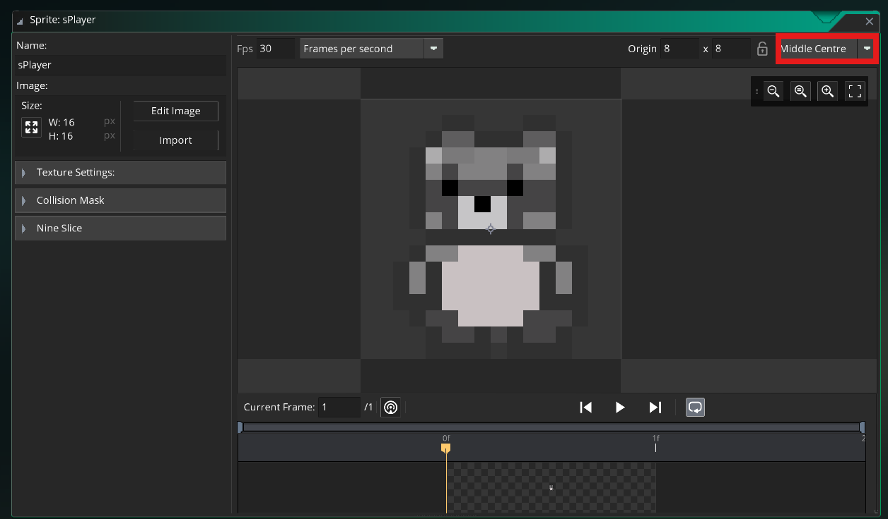
now it should be working!
collisions
lets make it so heidi doesn't walk right through the trees now
first, create an object called oSolid, go to Parent and add oTree to its Children
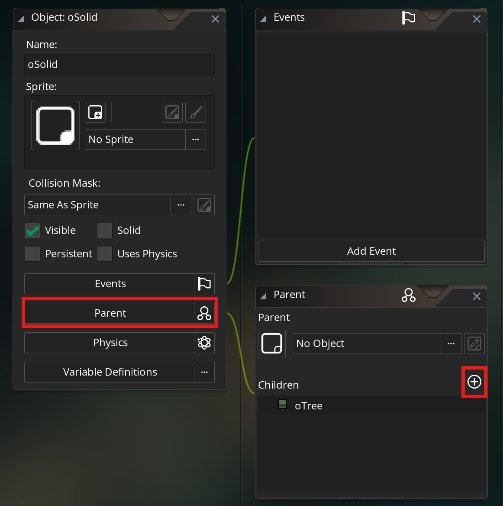
this will serve as a parent object for all of our solid objects, meaning that we could add all sorts of things to its children like rocks and buildings, and if we check that heidi collides with oSolid it will include collisions with all of its children.
go in your Step event, after we calculate the horizontal and vertical input but before we actually move heidi, and add this:
if(place_meeting(x + horizontal_input * movement_speed, y, oSolid)) { // check if heidi will collide with something if she moves in the x direction
horizontal_input = 0 // stop all horizontal movement
} else if (place_meeting(x, y + vertical_input * movement_speed, oSolid)) { // do the same for vertical movement
vertical_input = 0
}
place_meeting takes 3 inputs, an x position, y position, and an object to collide with, and will check if the current object (heidi) will overlap with the other object (oSolid) at that point
here, we check if heidi will overlap with a tree if she moves and stop her from moving if she will
go ahead and try it out!
enemies
now its time to make the slimes move towards heidi
i think you can try this by yourself this time, go ahead and make a Create and Step in oSlime and create a variable for movement speed in the create event (same think you did for oPlayer)
you cant just call the variable "speed" here since speed is a different variable that is built into gamemaker. it you try it, you'll see that the variable name turns green, and if that ever happens you should choose a different variable name
next, the function we use for enemy ai is really simple:
mp_potential_step(oPlayer.x, oPlayer.y, (your movement speed variable), true)
this is super cool built in gamemaker function that can automatically pick a path for your enemies to move in. you just need the x and y locations that it should try to move towards (in this case the players x and y) and the movement speed
dont worry about the last input, you should just always put true there
now the enemies will run towards you!
next steps
you might have noticed theres no way to kill the enemies, well thats on purpose!
there are so many possibilities, you could give the player a sword, guns, or let them cast really cool spells
or you could just not give the player a weapon and have them run away from the slimes indefinitely.
either way, you should pick something and give it a shot, remember there are tons of resources online and you can ask in #overdrive on slack for help
here are some ideas on what to do next:
- replace the art! the adventures of heidi is cool, but everyone who uses this guide makes it, so you should use your own or find some art (16x16 or something else) on itch.io
- make the level bigger, change the room size, make the camera follow the player, there's so many possibilities!
- make a way for the player to win, what kind of game doesn't have a win condition?
- add some cool mechanics, dashes, teleportation, npcs, its entirely up to you!
i didn't teach you how to do these things, but there are lots of guides and tutorials online to help you out, along with help in the #overdrive slack channel!
happy coding!
- rishabh